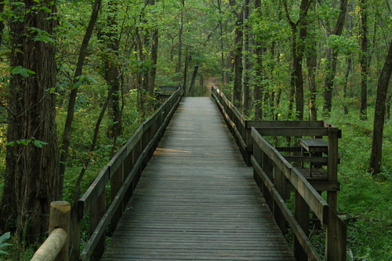
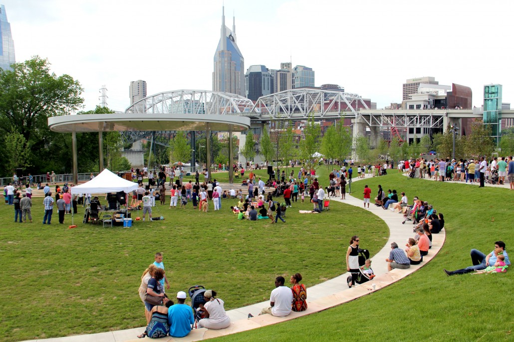

The Top Five Nature Areas in Nashville
Radnor Lake State Park
Radnor Lake State Park encompasses over 1200 acres over 6 miles of trails,
and a variety of programs to keep everyone in the family busy - it's no
wonder that Radnor Lake see nearly one million visitors annually.
Radnor Lake can be accessed from two entrances. The east entrance
(off Granny White Pike) has the largest parking area and Nature Center
(with restrooms and maps). From the west, visitors can access Radnor Lake
from Franklin Road. This smaller parking area does have restrooms and
accesses both Otter Creek Road and the trail system.
As a "Class II" State
Natural Area, Radnor Lake has the most restrictive set of land management
rules of any state park. Of these, there are few that hikers should keep
in mind: no jogging/running on the trails, no off-trail hiking, no dogs/pets,
and no food or picnicking is allowed.
Radnor Lake State Park - Official Site
Hours:
Open daily 6AM - Sunset
Location:
1160 Otter Creek Road
Nashville, Tennessee 37220
Centennial Park

Centennial Park encompasses 122 acres near the heart of the center of Nashville. The park’s staple building is the Parthenon, which is now a museum. It is a very open park and is the perfect green space for a variety of uses. It is great for walkers and joggers as well as those who just want an open space to fly a kite or sail a Frisbee. This park is often used for bringing the community together as it plays host to various festivals and events. This weekend, it hosted the Music Center Winterfest which is a holiday market with foods, crafts and entertainment.
Centennial Park - Official Site
Hours:
Open daily Dawn - 11PM
Location:
2500 West End Avenue
Nashville, TN 37203
Percy Warner Park
Percy Warner Park encompasses 2684 acres of forest and field, 9 miles from downtown Nashville. The park includes picnic areas, scenic roadways and overlooks, hiking trails, equestrian center and horse trails, cross country running courses, golf courses, athletic fields, and many other areas.
Hours:
Open daily Dawn - 11PM
Location:
5270 Harding Place
Nashville, TN 37217
Cumberland Park
Cumberland Park encompasses 6.5 acres and is a fairly new attraction along Nashville’s riverfront. The park features play space for children and families that incorporates unique play structures and water assemblies. There is also an outdoor amphitheater, which holds approximately 1,200 people for various events including festivals and concerts. The park is located between Shelby Street Pedestrian Bridge and the Korean War Veterans Memorial Bridge.
Cumberland Park - Official Site
Hours:
Open daily Dawn - 11PM
Location:
592 South First Street
Nashville, TN 37213
Gaylord Opryland Resort Gardens
The Gaylord Opryland Resort Gardens are located inside of the Gaylord Opryland Hotel which is located just 10 minutes from the Nashville International Airport and about 20 minutes from Downtown Nashville. The Garden encompasses 9 acres of indoor gardens complete with multiple waterfalls, multiple restaurants, and an indoor river featuring a flatboat river ride. You do not have to be staying at the hotel to experience all of the fun that the Gaylord Opryland Resort offers.
Gaylord Opryland Resort - Official Site
Hours:
The resort is open daily.
Location:
2800 Opryland Drive
Nashville, TN 37214